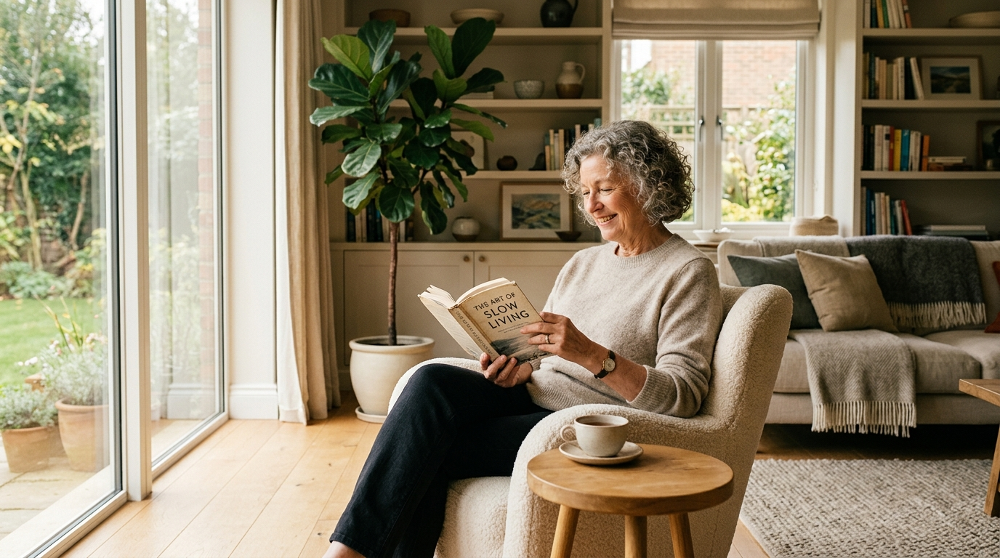

Supporting independence,
one activity at a time.
AbleSpace turns occupational therapy principles into everyday tools — practical guides, routine support, and Musa, your AI companion for questions between sessions.
AI OT Companion
Musa is available around the clock for educational guidance on daily activities, adaptive techniques, and home safety — look for the floating chat button in the corner of every page, or open the full conversation below.
Three tools, one goal: your independence
Everything on AbleSpace is built around helping you participate more fully in the activities that matter to you.
Therapy Hub
Step-by-step guides for dressing, cooking, mobility, home safety, and assistive equipment — organised by category and difficulty.
Browse activitiesDaily Planner
Organise your routine, set goals, track completed tasks, and check in on mood and energy so you can pace yourself well.
Plan your dayAsk Musa
Get quick, educational answers about adaptive techniques, energy conservation, and home safety — anytime, between sessions.
Start a conversationWhat OT is, and how AbleSpace helps
Occupational therapy helps people do the things they want and need to do, through the everyday activities — "occupations" — that make up a life. AbleSpace brings that thinking into your home, every day.
1. Practical function
OT focuses on real daily life — dressing, cooking, studying, and taking part in your community, whatever your physical or neurological starting point.
2. Bridging the gaps
Between appointments, AbleSpace offers activity guides, pacing strategies, and Musa's support, so progress doesn't stall while you wait for your next session.
3. Dignity and autonomy
Regaining control over self-care restores confidence, eases pressure on caregivers, and supports long-term wellbeing.
Designed for diverse needs
AbleSpace supports primary users, caregivers, and OT students alike:
Empowering real people, every day
"AbleSpace helped me understand ways to make my daily activities easier after my stroke. The one-handed dressing guide gave me my morning independence back."
Stroke survivor
"As a caregiver for my father with Parkinson's, Musa's energy conservation tips helped us structure tasks without overwhelming fatigue."
Family caregiver
"As an OT student, I love how AbleSpace presents adaptive equipment and home safety clearly. It bridges clinical concepts with practical self-management."
OT student